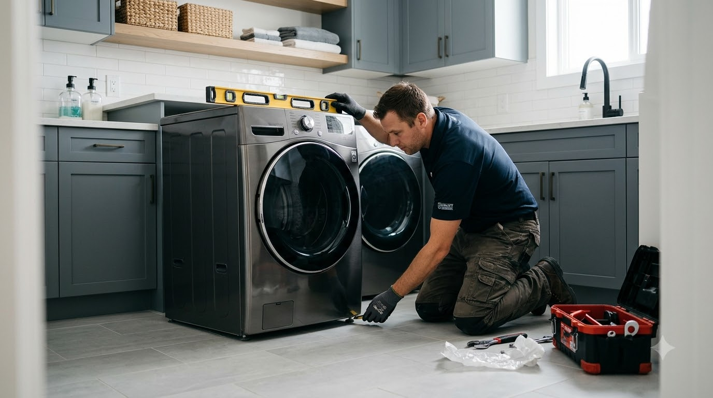

Section G
Request Service Enquiry
Washing Machine Maintenance Services
Preventive care programs designed to avoid emergency breakdowns. Regular descaling, lint filter flushing, and gasket sanitization keep clothing fresh and machines efficient.
Condition & wear inspection
Filter maintenance assessment
Detergent drawer flushing
Drum cleanliness & descaling
Door seal mold prevention
Inlet hose aging check
Typical Customer Requirement:
"The washer has developed a musty smell, water enters slower than usual, and we want a thorough preventive sanitization service."